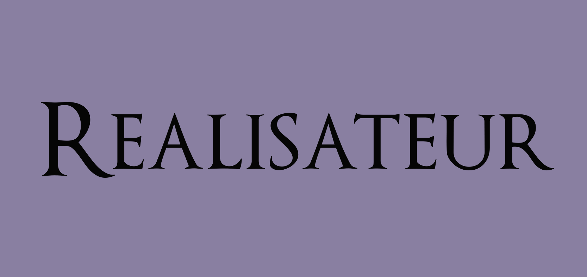
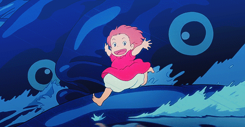

Synopsis
Le film parle d'un jeune guerrier japonais, Ashitaka. Son village se fait attaquer par un sanglier géant et furieux. Il affronte la bête et la tue, mais Ashitaka se retrouve avec une malédiction qui le consumera petit à petit, Il part en voyage à la recherche de ce qui a transformé l'animal en démon en espérant trouver un moyen de guérir sa malédiction. Sur son chemin il rencontre San, connue sous le nom de Princesse Mononoké, la fille qui vit avec des loups. Ashitaka apprend que les humains sont la sources de tout c'est apparitions de démons car ils détruisent la forêt qu'uls exploitent pour leurs forges.


Hayao Miyazaki est un réalisateur japonais qui a crée de nombreux films dont, " La Princesse Mononoké". Mais il est également animateur, écrivain et mangaka.
Autre films connues
Ponyo sur la falaise